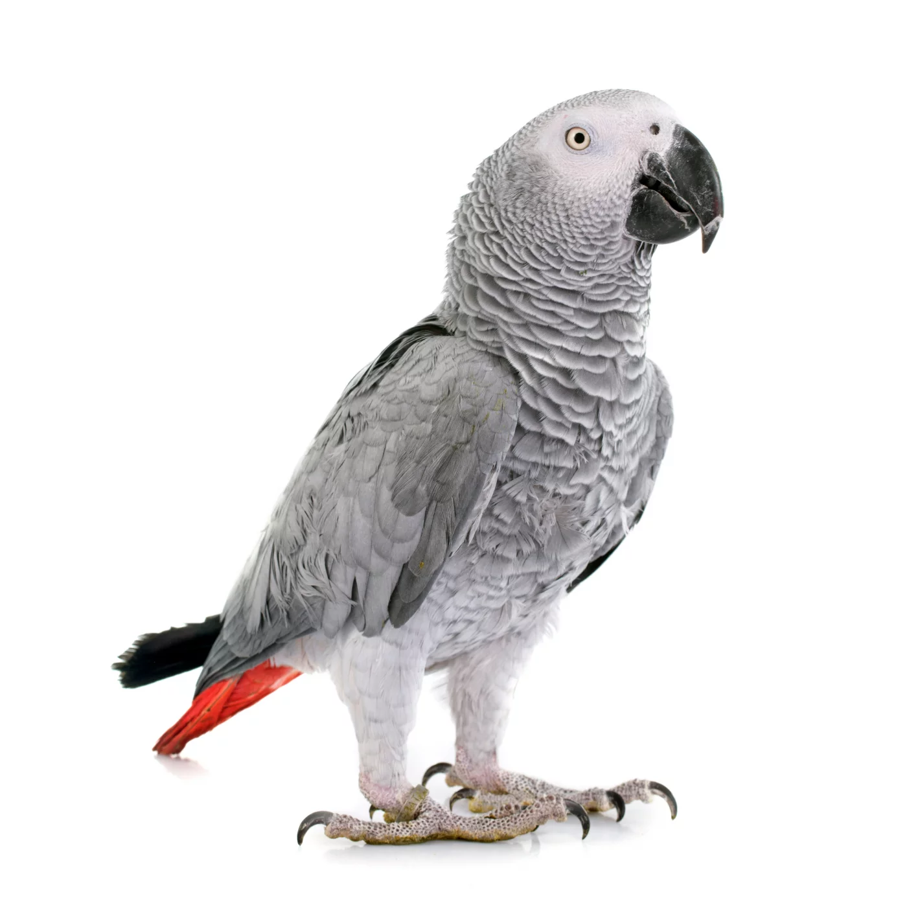

Un magnifique volatile
Pilou
Le Gris du Gabon est un perroquet très intelligent, originaire d’Afrique centrale, réputé pour son plumage gris élégant et surtout pour ses grandes capacités à imiter la voix humaine.

inestimable
Retour en arrière